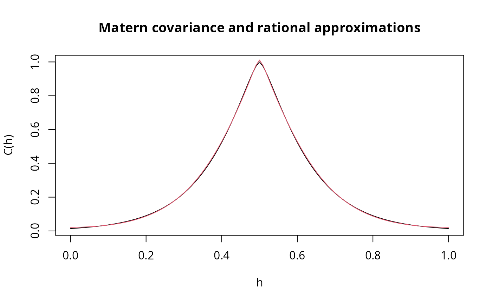

Rational approximations of fractional operators
Source:R/fractional.operators.R
fractional.operators.Rdfractional.operators is used for computing an approximation,
which can be used for inference and simulation, of the fractional SPDE
$$L^\beta (\tau u(s)) = W.$$
Here \(L\) is a differential operator, \(\beta>0\) is
the fractional power, \(\tau\) is a positive scalar or vector that
scales the variance of the solution \(u\), and \(W\) is white noise.
Arguments
- L
A finite element discretization of the operator \(L\).
- beta
The positive fractional power.
- C
The mass matrix of the finite element discretization.
- scale.factor
A constant \(c\) is a lower bound for the the smallest eigenvalue of the non-discretized operator \(L\).
- m
The order of the rational approximation, which needs to be a positive integer. The default value is 1. Higer values gives a more accurate approximation, which are more computationally expensive to use for inference. Currently, the largest value of m that is implemented is 4.
- tau
The constant or vector that scales the variance of the solution. The default value is 1.
Value
fractional.operators returns an object of class "rSPDEobj".
This object contains the following quantities:
- Pl
The operator \(P_l\).
- Pr
The operator \(P_r\).
- C
The mass lumped mass matrix.
- Ci
The inverse of
C.- m
The order of the rational approximation.
- beta
The fractional power.
- type
String indicating the type of approximation.
- Q
The matrix
t(Pl) %*% solve(C,Pl).- type
String indicating the type of approximation.
- Pl.factors
List with elements that can be used to assemble \(P_l\).
- Pr.factors
List with elements that can be used to assemble \(P_r\).
Details
The approximation is based on a rational approximation of
the fractional operator, resulting in an
approximate model on the form $$P_l u(s) = P_r W,$$
where \(P_j = p_j(L)\) are non-fractional operators defined in terms of
polynomials \(p_j\) for \(j=l,r\). The order of \(p_r\) is given by
m and the order of \(p_l\) is \(m + m_\beta\)
where \(m_\beta\) is the integer part of \(\beta\) if \(\beta>1\) and
\(m_\beta = 1\) otherwise.
The discrete approximation can be written as \(u = P_r x\) where
\(x \sim N(0,Q^{-1})\) and \(Q = P_l^T C^{-1} P_l\).
Note that the matrices \(P_r\) and \(Q\) may be be ill-conditioned
for \(m>1\). In this case, the methods in operator.operations()
should be used for operations involving the matrices, since these methods
are more numerically stable.
Examples
# Compute rational approximation of a Gaussian process with a
# Matern covariance function on R
kappa <- 10
sigma <- 1
nu <- 0.8
# create mass and stiffness matrices for a FEM discretization
x <- seq(from = 0, to = 1, length.out = 101)
fem <- rSPDE.fem1d(x)
# compute rational approximation of covariance function at 0.5
tau <- sqrt(gamma(nu) / (sigma^2 * kappa^(2 * nu) *
(4 * pi)^(1 / 2) * gamma(nu + 1 / 2)))
op <- fractional.operators(
L = fem$G + kappa^2 * fem$C, beta = (nu + 1 / 2) / 2,
C = fem$C, scale.factor = kappa^2, tau = tau
)
v <- t(rSPDE.A1d(x, 0.5))
c.approx <- Sigma.mult(op, v)
# plot the result and compare with the true Matern covariance
plot(x, matern.covariance(abs(x - 0.5), kappa, nu, sigma),
type = "l", ylab = "C(h)",
xlab = "h", main = "Matern covariance and rational approximations"
)
lines(x, c.approx, col = 2)
